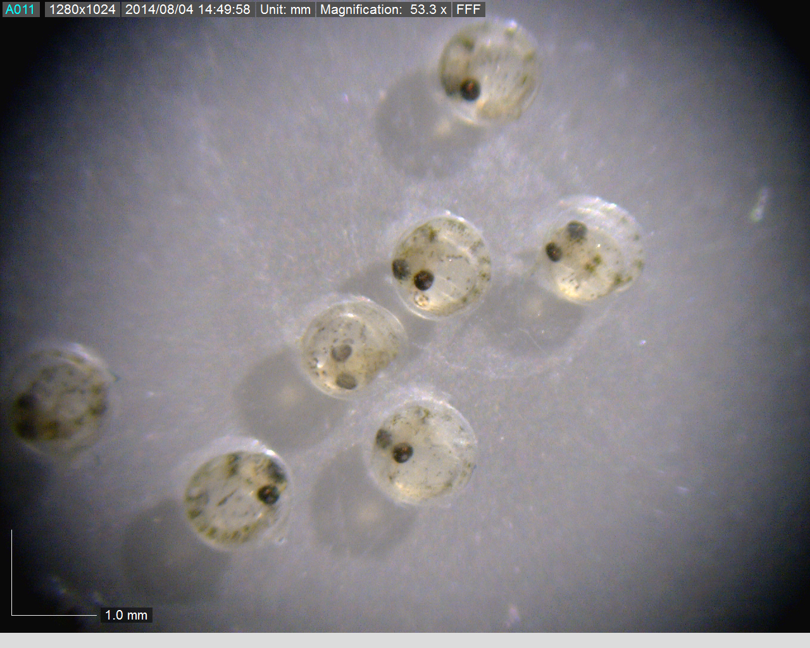

Research
Radiation Transport Simulations
MCNP Simulation of a Fastscan WBC for Calibration Purposes
 |
The effect of phantom size on calibration curves and source placement on the detected radiation is investigated. The radiation transport code MCNP6 is being used to run anthropomorphic phantoms of different size chest wall thicknesses and subject sizes so as to provide more realistic calibration curves. Back-to-Front ratios of dose position are also being simulated. |
MCNP Simulation of Offline Core Dose in CANDU Reactors


We are currently working on developing a next generation inspection system for CANDU pressure tubes. This next generation inspection system will allow for multiple channels to be inspected simultaneously, thereby decreasing outage time. The radiation transport code MCNP6 is being used to simulate dose rates throughout the core, which can then be used to predict component lifetimes for the inspection system (core model shown on the right).
Modelling Radiation Damage Due to Low Energy Ionizing Radiation
Examination of Secondary Electrons Generated by Encapsulated Gamma Sources to Improve Contact Dosimetry Estimates


It is crucial to obtain more accurate contact dosimetry estimates for sealed sources, that better match observed physical symptoms.To solve this problem the surface electron and gamma components of the contact dose rate, for a sealed source will each be measured experimentally. A large magnet will be used to bend the surface electrons away from the gamma dose measurement. Simulations using Monte Carlo radiation transport code PHITS will also be used to aid in experimental design and compare with experimental results.
Radiation Biology
Effects of Gamma Radiation to American Flagfish

American Flagfish are investigated as to their suitability to be a model organism in radiobiology studies. For that purpose the response of American Flagfish to gamma radiation and X-rays is studied.
Environmental
Radiation Protection
Database of resuspension factors with respect to varying surface roughness characteristics for CANDU reactor containment in the event of a LOCA
The effect of surface roughness of various surfaces on resuspension of particulate and consequent theoretical internal dose from inhalation is investigated. Effects of roughness characteristics on resting particulate can be examined by observing the sub-layer in a velocity field using computational fluid dynamics and examining the cumulative impact of forces on particles in 1 to 10 micron range.
Nuclear Security
Modeling the Efficacy of Nuclear Security Regimes

It is currently difficult to determine how effective the security is at a nuclear power plant, relying on expensive live exercises. Producing a computer model of the plant and its security allows testing, validation and optimization in between live exercises to further improve security.